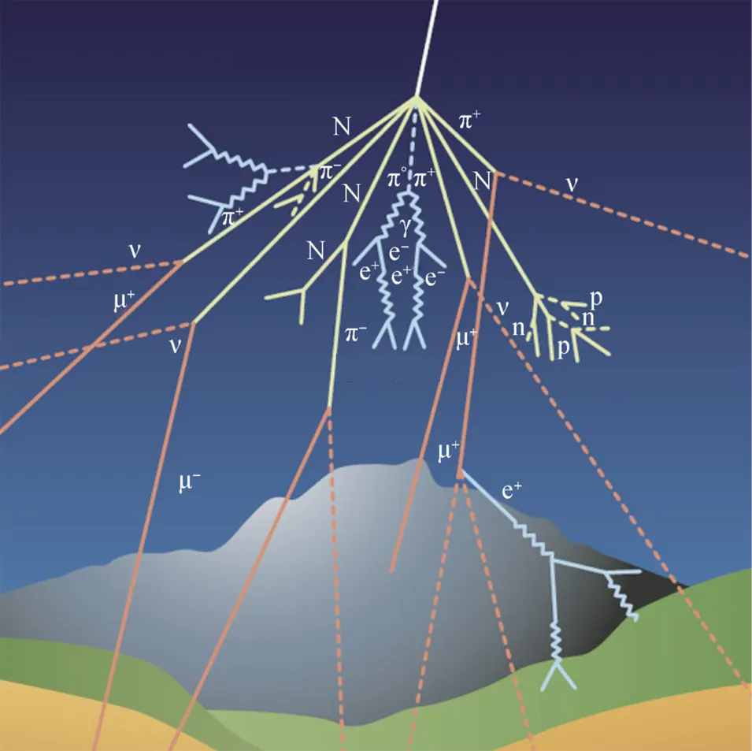
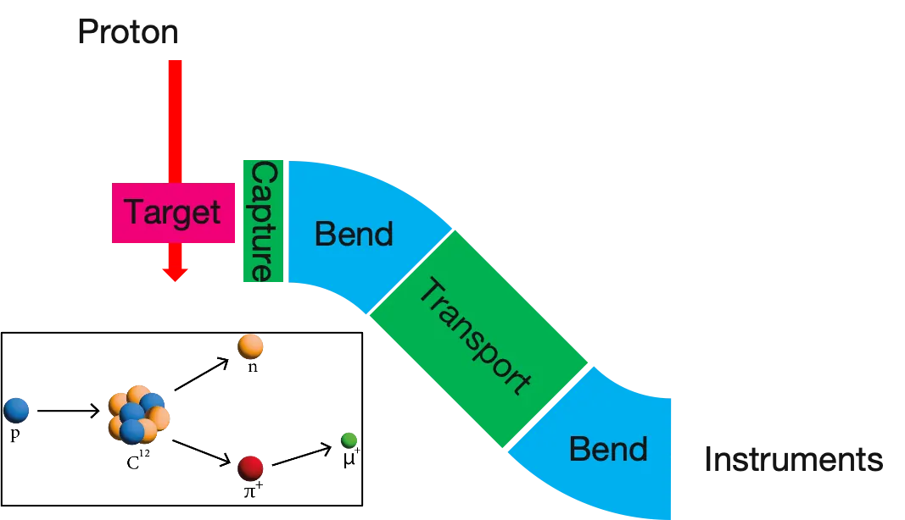
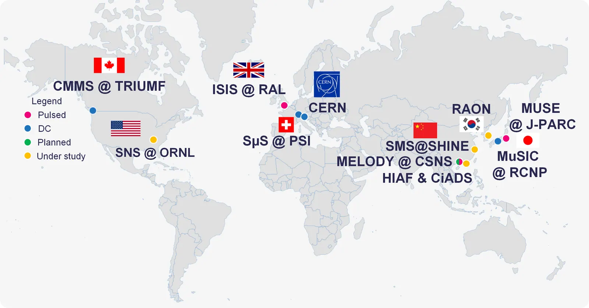
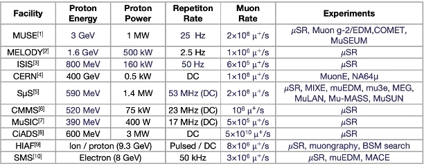

03/07About Muons缪子科普
Muon Sources缪子源
To study muons you first need muons — lots of them, and ideally in a neat beam with the right energy and spin. Nature gives us a free but gentle supply from the sky. Accelerators give us beams billions of times more intense. This chapter explains where muons come from, how laboratories make them, and why the world is building a new generation of muon sources, including one in Shanghai.
要研究缪子，首先得有缪子——数量要多，最好还是能量合适、自旋整齐的束流。大自然从天空免费为我们提供了温和的缪子来源；加速器则能产生强度高出数十亿倍的缪子束。本章介绍缪子从哪里来、实验室如何制造缪子，以及为什么世界各地——包括上海——正在建设新一代缪子源。
How muons are made缪子是如何产生的
Almost every muon, natural or artificial, starts as a pion. When a high-energy proton or photon hits an atomic nucleus, it can create pions (π+, π−) and sometimes kaons. A charged pion lives only 26 nanoseconds and decays almost always into a muon and a neutrino: π+ → μ+ νμ. Because the weak force breaks mirror symmetry, the muon comes out with its spin locked to its direction of motion — it is fully polarised, which is exactly what precision experiments need.
几乎每一个缪子——无论天然还是人工——最初都来自π介子。高能质子或光子撞击原子核时，会产生π介子（π+、π−），有时还有K介子。带电π介子的寿命只有26纳秒，几乎总是衰变为一个缪子和一个中微子：π+ → μ+ νμ。由于弱相互作用破坏宇称，产生的缪子自旋与运动方向锁定——即完全极化，这正是精密实验所需要的。


Cosmic muons: a free gift from the sky宇宙线缪子：来自天空的免费礼物
Cosmic rays — mostly protons accelerated by supernova remnants and other astrophysical engines — strike the upper atmosphere and create showers of pions, which decay into muons 10–20 km above the ground. These muons reach sea level with a rate of about one per square centimetre per minute and an average energy of a few GeV. They arrive mostly from overhead: the rate falls roughly as cos²θ away from vertical, because slanted muons cross more air.
宇宙线——主要是被超新星遗迹等天体“加速器”加速的质子——撞击高层大气，产生π介子簇射，π介子在离地10—20公里处衰变为缪子。这些缪子以约每分钟每平方厘米1个的通量到达海平面，平均能量为几个GeV。它们主要从头顶方向而来：偏离竖直方向时通量大致按 cos²θ 减小，因为斜射的缪子要穿过更多空气。


Strengths: free, everywhere, and penetrating enough to cross hundreds of metres of rock — perfect for muography and for teaching. Limitations: the rate is low, the energy and direction cannot be chosen, and the spin is not under control, so precision experiments need accelerators.
优点：免费、无处不在，穿透力强，可穿越数百米岩石——非常适合缪子成像和教学。局限：通量低，能量和方向无法选择，自旋也不受控制，因此精密实验必须依靠加速器。
Accelerator muons: beams made to order加速器缪子：“定制”的束流
At a muon facility, a powerful proton beam — typically a few hundred MeV to a few GeV — hits a target of graphite. The pions produced are collected by magnets, and their decay muons are steered down beamlines to experiments. By choosing how the muons are captured, physicists get very different beams.
在缪子装置中，高功率质子束（能量通常为几百MeV至几GeV）轰击石墨靶。产生的π介子被磁铁收集，其衰变产生的缪子沿束线被输送到各实验终端。通过选择不同的收集方式，可以得到性质迥异的缪子束。
Surface muons表面缪子
Positive pions that stop just inside the target surface decay at rest, giving μ+ with a fixed energy of 4.1 MeV (momentum 29.8 MeV/c) and nearly 100% spin polarisation. These low-energy muons stop within a fraction of a millimetre of material, which makes them the workhorse of materials research with muon spin rotation (μSR) and of experiments such as MEG and muEDM.
在靶表面附近停止的正π介子发生静止衰变，产生能量固定为4.1 MeV（动量29.8 MeV/c）、自旋极化接近100%的 μ+。这种低能缪子在材料中不到一毫米就会停下，因此成为缪子自旋旋转（μSR）材料研究以及 MEG、muEDM 等实验的主力束流。
Decay muons and negative muons衰变缪子与负缪子
Pions that fly out of the target can be guided through a long superconducting solenoid where they decay in flight. This gives higher-energy muons of either charge. Negative muons are needed for muonic atoms, element analysis and muon-catalysed fusion, since only μ− can be captured by a nucleus.
飞出靶的π介子可以在长超导螺线管中飞行衰变，从而得到两种电荷、能量更高的缪子。负缪子是缪子原子、元素分析和缪子催化核聚变所必需的，因为只有 μ− 才能被原子核俘获。
Continuous or pulsed?连续束还是脉冲束？
- Continuous beams (PSI in Switzerland, TRIUMF in Canada) deliver muons one at a time at very high average rates. Experiments can tag each muon individually — ideal for rare-decay searches and for μSR with excellent time resolution.
- 连续束（瑞士PSI、加拿大TRIUMF）以极高的平均流强逐个提供缪子，实验可单独标记每个缪子——非常适合稀有衰变寻找以及时间分辨率优异的μSR测量。
- Pulsed beams (ISIS in the UK, J-PARC in Japan, and the planned facility at CSNS in China) deliver intense bunches many times per second. Each bunch contains many muons, which suits measurements of slow processes and long time windows, and keeps backgrounds low between pulses.
- 脉冲束（英国ISIS、日本J-PARC以及中国散裂中子源规划中的装置）每秒提供多次高强度脉冲，每个脉冲包含大量缪子，适合测量慢过程和长时间窗口，且脉冲间本底很低。
The most intense continuous muon beams today, at PSI, deliver up to a few hundred million surface muons per second; PSI's HIMB upgrade aims for ten billion. At the other extreme, CERN's M2 beamline provides muons of up to 160 GeV for nuclear-structure and dark-sector experiments, and Fermilab's Muon Campus serves the g−2 and Mu2e experiments.
目前最强的连续缪子束位于PSI，每秒可提供数亿个表面缪子；PSI的HIMB升级计划目标为每秒一百亿个。另一方面，CERN 的 M2 束线可提供能量高达160 GeV的缪子，用于核子结构和暗物质相关实验；费米实验室的“缪子园区”则服务于 g−2 和 Mu2e 实验。
Slowing and cooling muons让缪子“慢下来、冷下来”
Many experiments want muons that are slower or more tightly bunched than a target naturally produces. Cooling a muon beam is hard because muons live only 2.2 μs, so it must happen fast.
许多实验需要比靶自然产生的更慢、更集中的缪子。由于缪子只能存活2.2微秒，冷却必须在极短时间内完成，难度很大。
- Low-energy muons: surface muons slowed in a thin layer of frozen noble gas emerge with only a few keV, letting scientists study thin films and interfaces nanometres below a surface.
- 低能缪子：表面缪子穿过一薄层固态惰性气体后，能量降至几keV，可用于研究表面以下几纳米处的薄膜与界面。
- Ultra-cold muons: muons are turned into muonium, which is then laser-ionised to release almost motionless μ+ that can be re-accelerated into a near-perfect beam — the technique behind J-PARC's g−2/EDM experiment.
- 超冷缪子：先将缪子变成缪子素，再用激光电离，释放出几乎静止的 μ+，随后再加速成近乎完美的束流——这是 J-PARC g−2/EDM 实验的关键技术。
- Ionisation cooling: muons pass through absorbers that remove momentum in all directions and are then re-accelerated forward. The MICE experiment in the UK demonstrated the principle in 2020 — a key step towards a future muon collider.
- 电离冷却：缪子穿过吸收体，在各方向上损失动量，随后只在前进方向上被重新加速。英国MICE实验于2020年验证了这一原理——这是迈向未来缪子对撞机的关键一步。
A new idea: muons from electrons新思路：用电子产生缪子
Most muon sources use proton accelerators. An alternative is to use a high-energy electron beam. When electrons hit a thick target, they radiate high-energy photons (bremsstrahlung); those photons can then create pions, or directly make muon–antimuon pairs. Electron linacs can also run at very high repetition rates, giving a fine time structure that proton machines struggle to match.
大多数缪子源使用质子加速器，另一种方案是利用高能电子束。电子打在厚靶上会辐射高能光子（轫致辐射），这些光子可以产生π介子，或直接产生缪子—反缪子对。电子直线加速器还能以极高的重复频率运行，提供质子加速器难以实现的精细时间结构。
Shanghai's SHINE facility is an 8 GeV superconducting electron linac built for a hard X-ray free-electron laser, with a pulse rate of up to about a million per second. Our group is designing China's first electron-driven muon source downstream of its beam dump, turning the spent electron beam into a new muon facility for particle physics, materials science and muography.
上海SHINE装置是为硬X射线自由电子激光建设的8 GeV超导电子直线加速器，脉冲重复频率可达每秒约一百万次。本课题组正在其束流垃圾桶下游设计中国首个电子驱动缪子源，把“用过”的电子束变成服务于粒子物理、材料科学与缪子成像的新型缪子装置。
Our SHINE muon source research →我们的SHINE缪子源研究 →
Muon facilities around the world世界各地的缪子装置


| Facility装置 | Country国家 | Beam束流类型 | Known for特色 |
|---|---|---|---|
| PSI (SμS, CHRISP) | Switzerland瑞士 | Continuous连续 | World's most intense muon beams; MEG II, Mu3e, muEDM, μSR全球最强缪子束；MEG II、Mu3e、muEDM、μSR |
| TRIUMF | Canada加拿大 | Continuous连续 | μSR on quantum materials量子材料μSR研究 |
| ISIS | UK英国 | Pulsed脉冲 | μSR, muonic X-rays for heritage scienceμSR、用于文物研究的缪子X射线分析 |
| J-PARC MUSE | Japan日本 | Pulsed脉冲 | Intense pulsed beams, ultra-cold muons, g−2/EDM, COMET高强度脉冲束、超冷缪子、g−2/EDM、COMET |
| RCNP MuSIC | Japan日本 | Continuous连续 | Solenoid pion capture螺线管π介子收集 |
| Fermilab Muon Campus | USA美国 | Pulsed脉冲 | Muon g−2, Mu2e |
| CERN M2 | Switzerland/France瑞士/法国 | High energy (up to 160 GeV)高能（最高160 GeV） | AMBER, NA64μ |
| CSNS MELODY | China中国 | Pulsed (planned)脉冲（规划中） | China's first dedicated muon facility中国首个专用缪子装置 |
| SHINE muon source | China中国 | Electron-driven (in development)电子驱动（研发中） | High repetition rate, developed by our group高重复频率，由本课题组研发 |


References参考文献
- H. Takada et al., “Materials and Life Science Experimental Facility (MLF) at the Japan Proton Accelerator Research Complex,” Quantum Beam Sci. 1, 8 (2017). doi:10.3390/qubs1020008
- Y. Bao et al., “Progress report on Muon Source Project at CSNS,” J. Phys.: Conf. Ser. 2462, 012034 (2023). doi:10.1088/1742-6596/2462/1/012034
- R. E. Williamson et al., “High-intensity studies on the ISIS RCS and their impact on the design of ISIS-II,” Proc. HB2023 THA1I2 (2024). doi:10.18429/JACoW-HB2023-THA1I2
- NA64 Collaboration (Yu. M. Andreev et al.), “First results in the search for dark sectors at NA64 with the CERN SPS high energy muon beam,” Phys. Rev. Lett. 132, 211803 (2024). doi:10.1103/PhysRevLett.132.211803
- D. Kiselev et al., “The PSI meson target facility and its upgrade IMPACT-HIMB,” EPJ Web Conf. 285, 07002 (2023). doi:10.1051/epjconf/202328507002
- J. L. Beveridge, J. Doornbos & D. M. Garner, “Muon facilities at TRIUMF,” Hyperfine Interact. 32, 907 (1986). doi:10.1007/BF02395002
- D. Tomono et al., “Construction of new DC muon beamline, MuSIC-RCNP, for muon applied science,” PoS NuFact2017, 111 (2018). doi:10.22323/1.295.0111
- T. Prokscha et al., “The new μE4 beam at PSI: a hybrid-type large acceptance channel for the generation of a high intensity surface-muon beam,” Nucl. Instrum. Meth. A 595, 317 (2008). doi:10.1016/j.nima.2008.07.081
- M. Abe et al., “A new approach for measuring the muon anomalous magnetic moment and electric dipole moment,” Prog. Theor. Exp. Phys. 2019, 053C02 (2019). doi:10.1093/ptep/ptz030
- MICE Collaboration (M. Bogomilov et al.), “Demonstration of cooling by the Muon Ionization Cooling Experiment,” Nature 578, 53 (2020). doi:10.1038/s41586-020-1958-9
- H.-J. Cai et al., “Towards a high-intensity muon source,” Phys. Rev. Accel. Beams 27, 023403 (2024). doi:10.1103/PhysRevAccelBeams.27.023403
- Y. Xu et al., “Feasibility study of the GeV-energy muon source based on the High Intensity Heavy-ion Accelerator Facility,” Phys. Rev. Accel. Beams 28, 053401 (2025). doi:10.1103/PhysRevAccelBeams.28.053401
- F. Liu et al., “Simulation studies of a high-repetition-rate electron-driven surface muon beamline at SHINE,” Phys. Rev. Accel. Beams 28, 083401 (2025). doi:10.1103/t2d3-xqnp